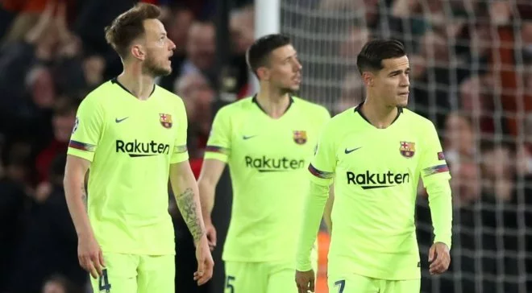
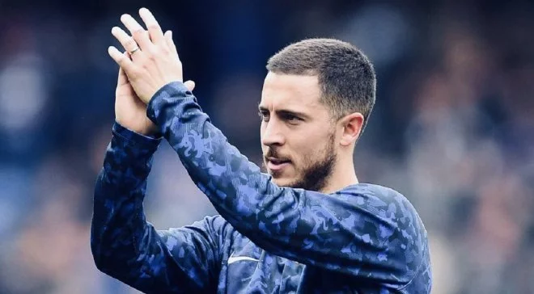

Sports news
FOOTBALL
HOCKEY
VOLLEYBALL
BASKETBALL
HOME
Барселона готує революцію після Ліверпуля: продаж 10-и гравців, два перші трансфери та несподівана петиція фанів

Каталонський гранд приймає заходи після ганебного вильоту з Ліги чемпіонів.
Бартомеу вирішив, що з нього досить. Попри відсутність серйозних публічних заяв, які навряд чи з'являться до фіналу Кубка Короля, керівництво Барселони на чолі з президентом клубу розпочало роботу над масштабною перебудовою першої команди. Римське та ліверпульське фіаско неабияк заплямували репутацію "кулес", з чим не збираються миритись у столиці Каталонії
Реал узгодив з Челсі трансфери Азара та Ковачіча – лондонці підпишуть хорвата попри трансферний бан

Мадридський Реал та лондонський Челсі домовились про трансфери Едена Азара та Матео Ковачіча.
Трансферна сага із переходом Едена Азара в мадридський Реал близька до розв'язки. Принаймні в цьому впевнене авторитетне іспанське видання Marca."Вершкові" давно полюють за зіркою атак лондонського клубу. Однак Челсі до останнього намагався втримати бельгійця на Стемфорд Брідж. Чинний контракт Азара з Челсі збігає влітку 2020 року тому, щоб не втратити гравця безкоштовно, "аристократи" мусять продати його в кінці нинішнього сезону. Раніше вже повідомлялося, сторони досягли домовленості ще кілька місяців тому і бельгієць з наступного сезону виступатиме на Сантьягу Бернабеу. За інформацією іспанської преси, клубам нарешті вдалося узгодити всі деталі.
Атлетіко визначивя з ціною на Калініча – гравець може перейти в Фенербахче
Фенербахче хоче придбати форварда Атлетіко Ніколу Калініча. "Матрацники" визначились із ціною
Фенербахче розглядає варіант із підписанням нападника Атлетіко Ніколи Калініча, повідомляє Marca. "Матрацники" готові відпустити футболіста за 15 млн євро.Колишня зірка Дніпра не є основним гравцем у команді Дієго Сімеоне і може змінити клубну прописку. Раніше про свій офіційний відхід з Атлетіко повідомив Годін офіційно оголосив, що покидає Атлетіко, і не стримав сліз – відео, яке нікого не залишить байдужим захисник Дієго Годін, який захищає кольори клубу з 2010 року.